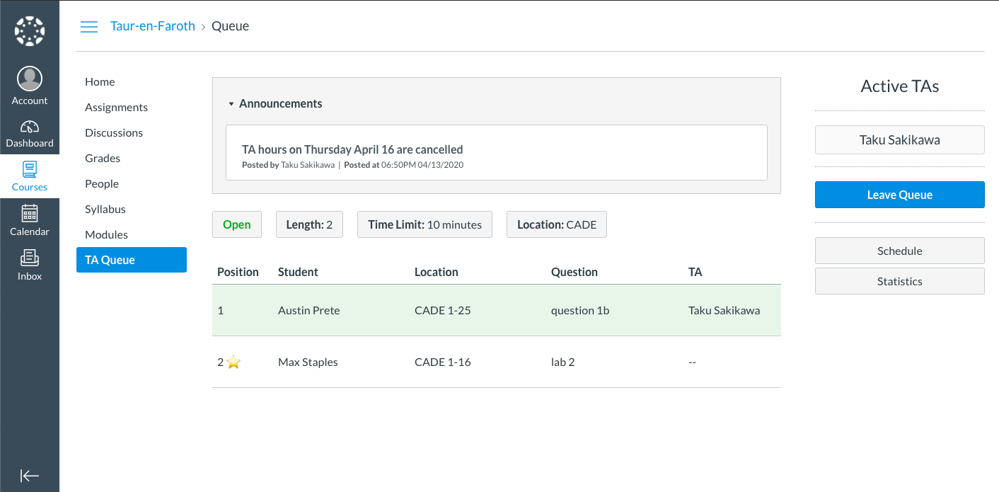

TA Queue
A TA queue system available directly within Canvas
Team InformationBeta Presentation
Beta Release Demo
Summary
Desgin Document
A TA queue system available directly within Canvas
Team Information
A TA queue system available directly within Canvas would enable much easier usage by students, TAs and professors. Additionally, an option for virtual assistance would allow students to receive help remotely over a video conference with a shared digital whiteboard. Ultimately, the Canvas-integrated TA queue would allow for more efficient and directed TA hours and increase student success as a result.
The basic TA queue
Statistics page keeping track of useful information such as percentage of student helped per TA, students helped per day, and average help time.

Scheduler page, where TA can setup help hours